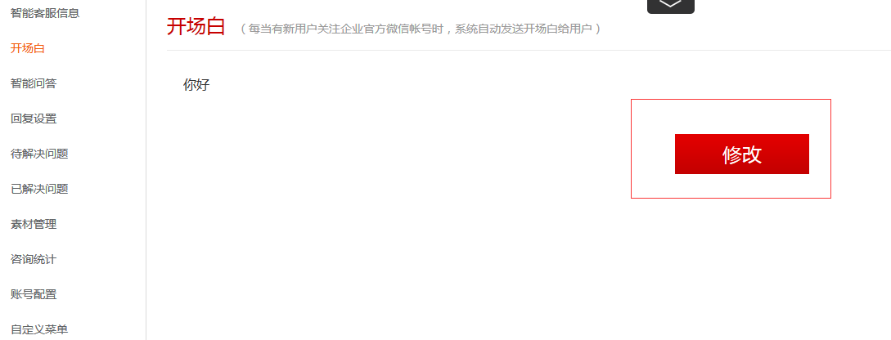
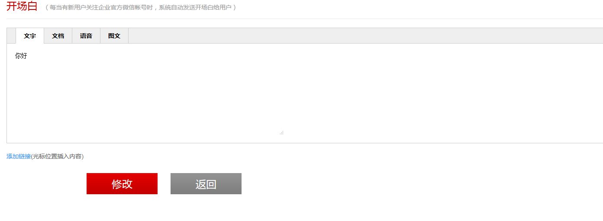
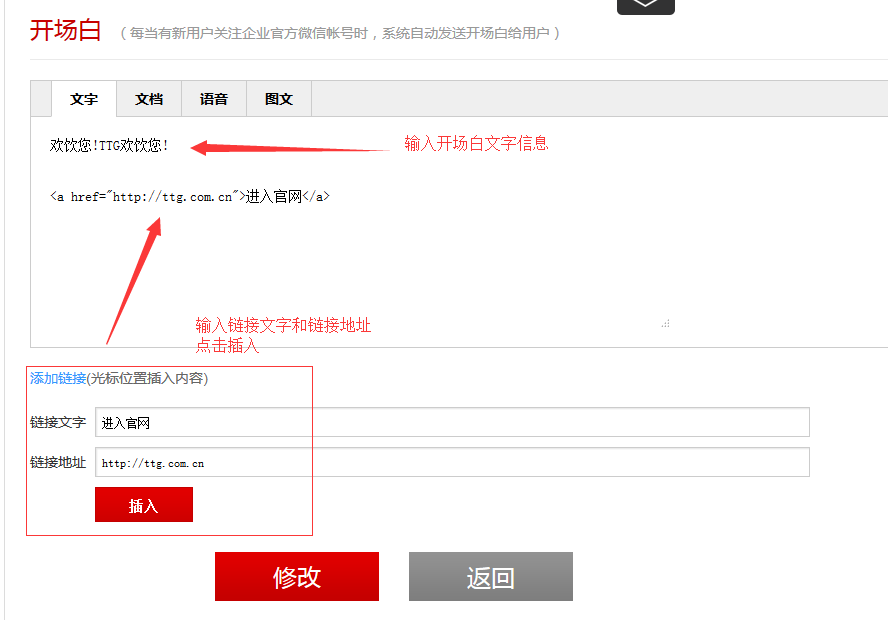
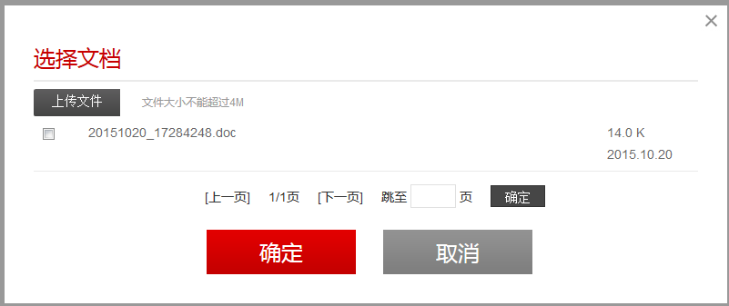
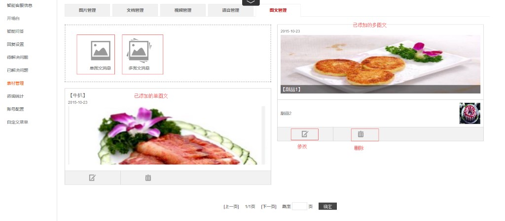
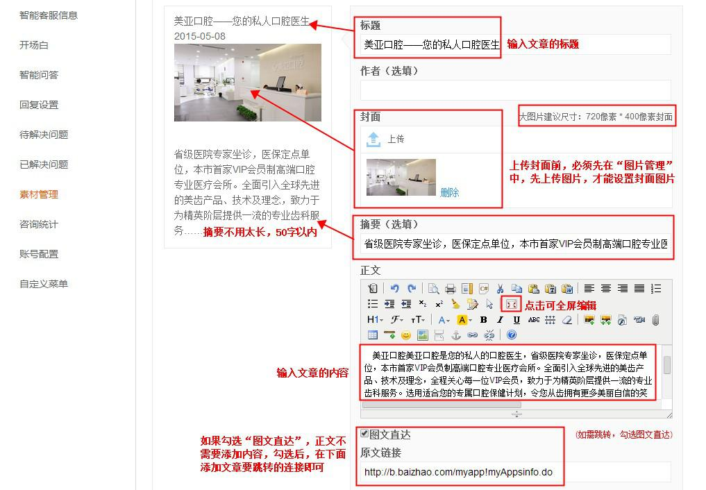
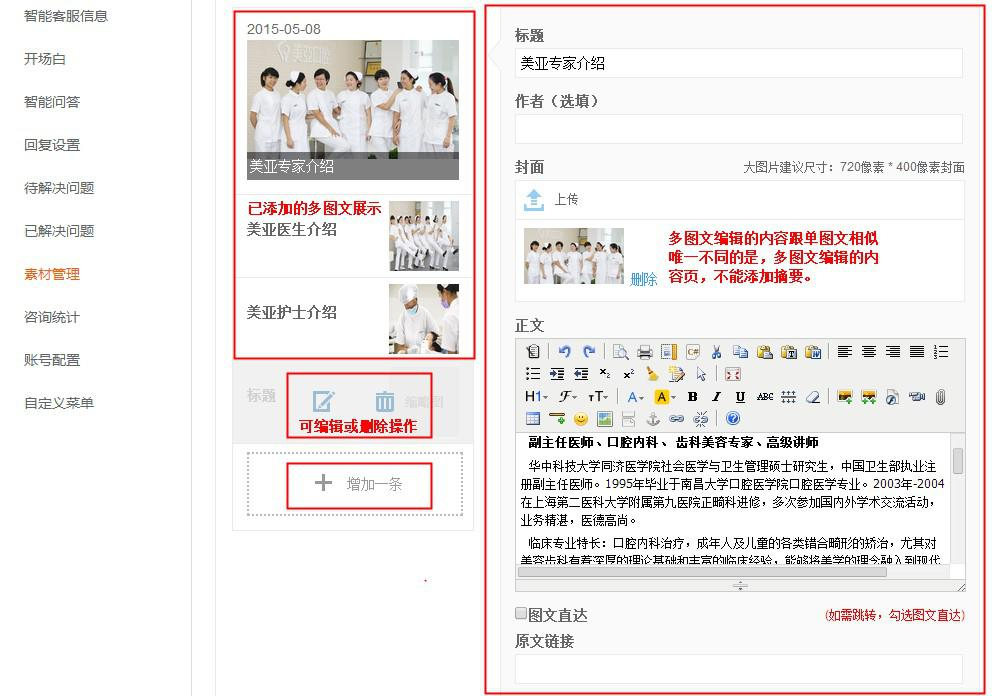
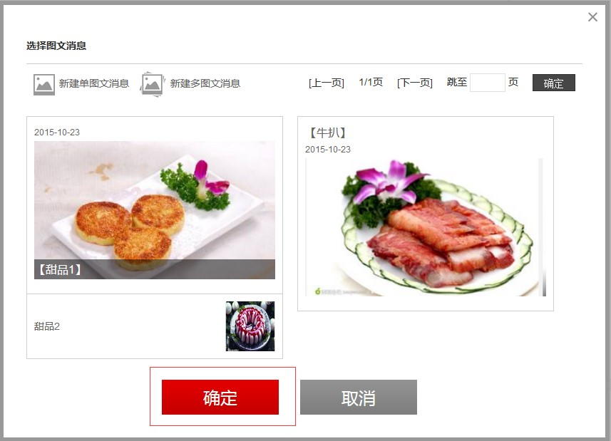
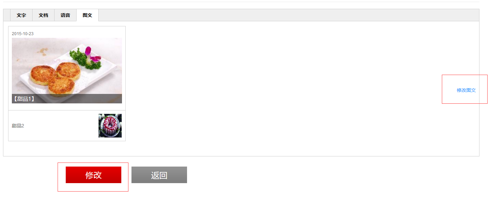

1、设置开场白
在T-Linx商户智能云服务平台打开微信接入应用，选择【开场白】进入，如下图所示：

点击上图的修改按钮进入设置页面，如下图所示：

开场白提供四种形式：文字、文档、语音、图文
文字：
文字消息可直接添加，在编辑框里输入您想说的开场白，可选择是否添加文字链接，完成后点击修改即可。如下图所示：

2、上传文档、语音、图文
设置文档，语音、图文前需要事先在【素材管理】中添加素材，在素材管理上传成功之后，即可选择要上传的文档、语音、图文点击确定即可。如下图所示：

图文：
添加图文需要事先进入【素材管理】中添加所需图片等素材，可根据需求选择单图文消息添加或者多图文消息添加。如下图所示：

单图文消息添加：
点击上图【单图文消息】按钮进入单图文设置页面，标题、作者（选填）、封面、摘要（选填）、正文及原文链接都需要自定义。建议封面的大小尺寸为"720*400"，上传图片前，必须先在”图片管理“中先上传图片，才能设置封面图片，各项添加完成后点击【完成】按钮即可，左边部分是预览效果图，如下图所示：

多图文消息添加：
点击【多图文消息】按钮进入多图文设置页面，多图文编辑的内容跟单图文相似，但与单图文的区别是：多图文可以展示多条内容不同的消息，只需点击红框中“增加一条”即可新增一条图文消息。

3、开场白设置成图文
在【素材管理】中事先完成资料上传之后，在开场白设置页面中点击【图文】按钮，可根据需求选择想要添加的图文信息，选择该图文后后点击确定完成。如下图所示：

在上图中点击确定后，进入下图，点击修改图文可对图文进行修改操作。完成开场白设置点击修改即可。
